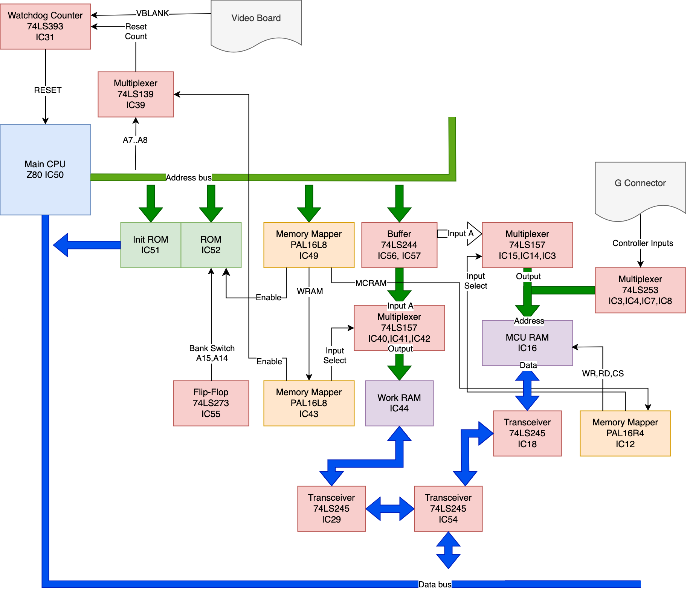
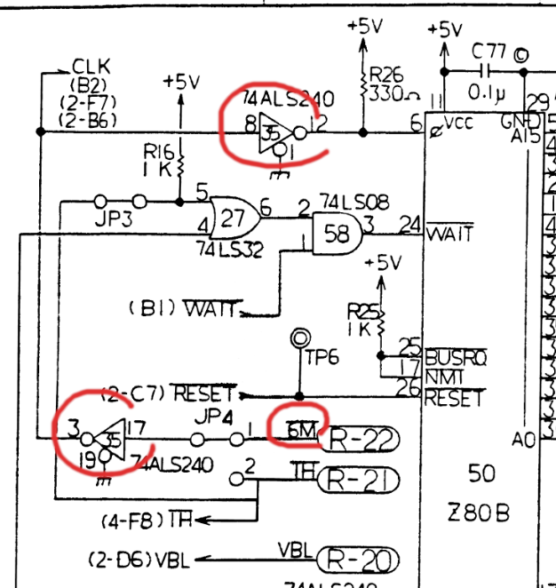
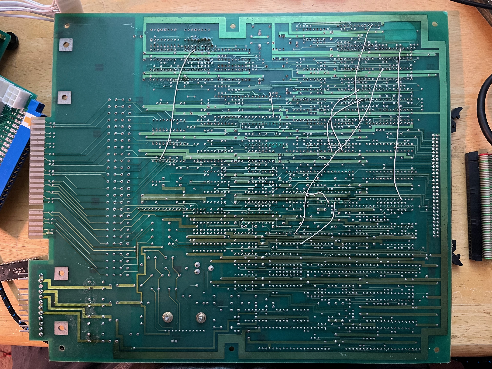

A Bubble Bobble repair journey
Agi Sferro <agi@sferro.dev>
Sept 12th 2024
A couple of months ago I picked up a "for parts", original Bubble Bobble board. I have repaired Gameboy carts before and I thought this was gonna be a fun project.
Going in, I had no prior knowledge of arcade boards, 80s electronics, TTL, discrete logic or anything like that. I read a lot of Bubble Bobble repair logs and they really helped me so I figured I would write my own.
Buckle up, this is gonna be a doozy.
Background
If you are familiar with Bubble Bobble or arcade boards or electronics in general you can safely skip this section.
Bubble Bobble, like many older Arcade boards, has schematics fully available online, so I am going to assume that you can refer to them when needed. Chips on this board are denominated by ICxx and that is what I will use throughout this.
Like many boards of the time, Bubble Bobble is built using a lot of discrete logic, in the form of Texas Instrument 7400 series chips. These chips are usually very simple, e.g. 2 or 3 OR gates, or a simple multiplexer or flip-flops. Thanks to this, a lot of the logic is openly accessible on the board, you can literally probe the CPU Address bus with a logic analyzer and see every single read or write. This will be very helpful later.
The board contains no less than 4 micro-processors:
- IC50, the main Z80 CPU, 8-bit running at 6Mhz
- Work RAM at IC44 (shared with Sub CPU)
- Main ROM at IC51, additional ROM at IC52
- IC36, sub Z80 CPU, running at 6Mhz
- Work RAM at IC44 (shared with Main CPU)
- Main ROM at IC37
- IC45, sound Z80 CPU, running at 3Mhz
- Sound RAM at IC47
- Sound ROM at IC46
- IC17, "security chip" custom MCU a.k.a PS4, running at 6Mhz. We now know this is a custom Motorola 6801U4.
- MCU Ram (or MCRAM) at IC16, accessible to Main CPU
- Internal ROM, inaccessible without decapping (hence the "security" part)
Each micro-processor has its own address and data bus. This is a rough block diagram of the Main CPU buses:

I really struggle reading other people's block diagrams, so if this does not make any sense to you, do not fret, it is not that important.
Buses
In basic terms, a bus needs to connect a CPU with multiple chips on the board. The 16-bit address bus of the main CPU is made up of 16 individual lines, each carrying address information for the corresponding bit. Similarly, the 8-bit data bus carries the data information coming in and out of the CPU.
For instance, if the CPU wants to read at address 0xFF00, it will set it's address pins A15..A8 to "high" and the address pins A7..A0 to "low". The corresponding chip will set the data bus pins D7..D0 to the value requested. Which chip corresponds to which address (often called "memory map") is encoded in hardware, mostly driven by the PAL chips.
The Main CPU data/address buses connect to: the Main ROM, the sub ROM, the Work RAM, the MCU Ram, the Watchdog (more on this later), and others. To make sure that only one chip drives the data pins at every one time, there are multiple strategies involved:
- The OE (Output Enable) or CS (Chip Select) pins of unrelated chips are disabled
- A multiplexer is put in between the bus and the chip
Additionally, older chips like the 74LS series employed on this board, require a lot of current to drive the state high or low. To make sure that each line is driven adequately, buffers are often put in between the bus and multiple outputs. Occasionally a double-NOT gate is used in place of a buffer, e.g. the 6MHz clock goes through two NOT gates at IC35 before feeding into the main CPU.

With all of this in mind, a lot of the board is essentially codifying the memory map of each CPU into hardware. Each bus will go through a buffer first, then one or more multiplexer to connect to all the required chips, the enable pins will be driven by the PAL chips and finally connect to the RAM, ROM or hardware input.
Watchdog
A hardware watchdog is a system that ensures that the system continues to operate normally. At its basic terms, a watchdog is a timer, which, if not restarted, will reset the system. The CPU is in charge of periodically restarting the watchdog. If the system does not reset, we are guaranteed that the CPU is still running somewhat normally.
The Bubble Bobble watchdog is implemented by a 74LS393 counter at IC31. The counter increments at every VBLANK. The CPU can restart the Watchdog timer by writing to address 0xFF80. This address is encoded into the PAL at IC49 which pulls the TRES (Timer RESet) line through the multiplexer at IC39. If IC31 timer is not restarted, the 1DQ line of IC31 will be eventually pulled high, triggering the master RESET line which restarts every chip on the board including the main CPU.
Repair log
When I first get the board, I immediately realize that I am in for a long journey. The board has extensive corrosion, lots of deep scratches and what looks like corroded traces.
I start by dumping out all the ROMs and check against the MAME database. Everything checks out so I move on.
Powering up the board I notice the 5V line is really low, around 3.5V, no matter how much I crank up the power supply.
The first thing I do is to replace the H connector, which powers the board. This is probably unnecessary as you can just file the corrosion away from the pins, but this board is going to be my Frankenstein / sandbox board anyway, so I do not care too much about keeping it stock. This brings the voltage to 4.1~4.2V.
Using a known-good Bubble Bobble arcade board I verify that both the CPU board and the Video board are both bad. For this log I am going to focus on the CPU board, which I connected to a known-good Video board.
The CPU board keeps resetting, the watchdog barks. The Sub CPU never gets out of reset, so I know there's some problems surrounding the Main CPU.
With an oscilloscope, I probe the TRES line of the watchdog, it fires once and then stops firing.
With my multimeter in continuity mode I painstakingly probe every bus trace coming out of the CPU to the RAM/ROMs. I patch ~10 broken traces. I start feeling an intense internal dread, I will never find all the broken traces on this board.

After patching the traces, the board still resets. I pull out my BK Precision 550 Logic comparator and start checking ICs around the buses but everything tests as good. I just got the 550 so I am not sure if the readings are correct or if I am doing something wrong, there are also chips too close to each other that I cannot probe.
I start replacing some of the 74LS245, 157, 138 around the buses, but nothing seems to change. Replace RAMs and CPUs, nothing.
The 60-pin board connector is functional but one of the flaps is broken, so I eventually decide to replace it for the heck of it. This seems to make the reset intervals longer (!) yahoo, something is changing.


At this point I am feeling a little stuck, everything that I probed seems to work correctly, the logic chips seem to be doing what they are supposed to do, all the traces beep, why is this thing not working?
I get out my 16 channels logic analyzer and record a trace of the main CPU address bus using a DIP clip. I don't have enough channels to know what the CPU is doing, but the addresses can give me a clue of what's going on. I also record a trace of the good board. I might or might not have a 100 channel logic analyzer coming in the mail


There is a lot of random noise in the logic analyzer trace, looking closely I notice that the noise seems to mostly be at the sampling frequency so I write a little script to discard any sample of 1/50MHz width, and then compare the good and the bad traces. I'll still have noise, but it will be better I say to myself.
Lo and behold, all the noise is gone. The good and bad traces agree for 300k samples and then deviate sharply. This gives me great confidence that the deviation point is the problem.
It then hits me: I can just disassemble the ROMs and see what the CPU is doing!
Looking for a disassembler, people online recommend NSA's Ghidra, which I know of as a powerful reverse-engineering tool. I never bothered using it as I thought it would be really hard to learn, but to my surprise, I was able to get working in minutes! The UI feels very intuitive and for basic things it's really nice, and of course, it supports the Z80!
I have some 8-bit assembler knowledge from my time writing a Gameboy emulator. Here's a snippet of the diff of the two traces. Keep in mind, the column is the address that the CPU is reading or writing to
--- bubbl-good.csv 2024-09-08 23:09:03
+++ bubbl-bad.csv 2024-09-08 23:05:50
@@ -380774,443697 +380774,305777 @@
...
h0B33
h0B34
hF7FB
hF7FA
h026C ;
h0064 ; ?
h026D ;
h026E ;
h026F ;
h0065 ; ?
h0270 ;
h0271 ;
h0272 ;
h0066 ; ?
h0273 ;
h0067 ; ?
hFC21 ;
h0274 ;
h0068 ; ?
h0275 ;
-h0276
-h0069
-h0277
-h0278
h0279
-h006A
+h0069
h027A
h027B
There is a weird counter going on (marked with ? above), I am not sure where this value is coming from, and I doubt the CPU is actually reading it. But both good and bad traces have it, so I decide to ignore it (if you know what it is, I would love to hear it!)
Armed with the following memory map (from MAME) I start decoding the diff:
0x0000-0x7FFF 32768 ROM
0x8000-0xBFFF 16384 ROM Bank bank1
0xC000-0xDCFF 7424 RAM, Shared videoram
0xDD00-0xDFFF 768 RAM, Shared objectram
0xE000-0xF7FF 6144 RAM, Shared share1
0xF800-0xF9FF 512 RAM Device Write, Shared palette, palette_device, write, palette
0xFA00 1 Read/Write bublbobl_sound_status_r, bublbobl_sound_command_w
0xFA03 1 Write bublbobl_soundcpu_reset_w
0xFA80 1 Device Write watchdog, watchdog_timer_device, reset_w
0xFB40 1 Write bublbobl_bankswitch_w
0xFC00-0xFFFF 1024 RAM, Shared mcu_sharedram
All the addresses belong to the main CPU ROM a78-06 so I load the file, that I dumped earlier, onto Ghidra.
h026C ld de, 0293
h0064 ?
h026D <>
h026E <>
h026F ld hl, fc21
h0065 ?
h0270 <>
h0271 <>
h0272 bit 7, (hl)
h0066 ?
h0273 <>
h0067 ?
hFC21 ; reading bit 7 of FC21
h0274 jp nz, 0279
h0068 ?
h0275 <>
-h0276
-h0069
-h0277
-h0278
The lines marked as <> are continuation of the earlier multi-byte instruction.
The bad and good trace agree until the CPU tries to read bit 7 of 0xFC21:
h026F ld hl, fc21
h0272 bit 7, (hl)
h0274 jp nz, 0279
The jp instruction will jump to 0x0279 if the bit is nz (non-zero) and will continue if the bit is zero. And from the diff:
--- bubbl-good.csv 2024-09-08 23:09:03
+++ bubbl-bad.csv 2024-09-08 23:05:50
@@ -380774,443697 +380774,305777 @@
...
-h0276
-h0069
-h0277
-h0278
h0279
We can see that the "bad" board does jump to 0x0279 while the "good" board continues on to 0x0276. This is huge! Whatever is at 0xFC21 is at least part of the problem.
From the memory map above, 0xFC21 is part of the MCU Ram at IC16.
I check the logic analyzer trace and notice that the read at 0x0272 is actually the first time the MCRAM is accessed, so the problem might not necessarily be on data pin 7 but it could potentially be all pins, or even the enable pin.
I check all the PCB traces coming from the buses to the MCU RAM. I find one other broken trace I missed earlier, board still resets after fixing it.
I check the pin CD7 with my oscilloscope and, sure enough, it's always high on the "bad" board, while it changes on the "good" board. After a lot of troubleshooting I notice that, while all other data pins of the RAM are floating most of the time (the voltage is around 1.6V, not a clear "low" or "high"), CD7 is always solidly high. A stuck pin!
I know the RAM chip itself is good, as I swapped it earlier, so I look at all the other chips that might be feeding this line. IC8 seems like a great candidate, it has an output line on CD7 and looks very corroded. Unfortunately there's a resistor package too close to the chip to use my logic comparator, so the only option is to desolder it and check it out of circuit.

I remove it, add a socket and immediately go to my bench. If IC8 was driving the line high, it should at least do something different now, even without a chip in the socket. And it does. The board does not reset anymore, just a black screen. At this point I've been working on this board for weeks during nights and weekends. This is the first tangible improvement I had the entire time.
I find a new 74LS253 for IC8, put it in the socket and lo and behold, it works!
All in all, I replaced and socketed around 10 chips, patched lots of traces and replaced the R connector. Turns out IC8 was the only bad IC. I am happy to report the BK550 is able to tell me that the 74LS253 had a stuck line.

Next up, the Video board.
TL;DR
Replaced corroded H connector, replaced broken R connector, patched several corroded traces. Watchdog barks. Dumped and verified all ROMs. Replaced several buses ICs with no change. Replaced CPUs and RAMs, no change. With a logic analyzer, found out the CPU deviates from a known-good CPU when reading from pin 7 of MCRAM. Traced back to a stuck high pin on IC8. Tested.